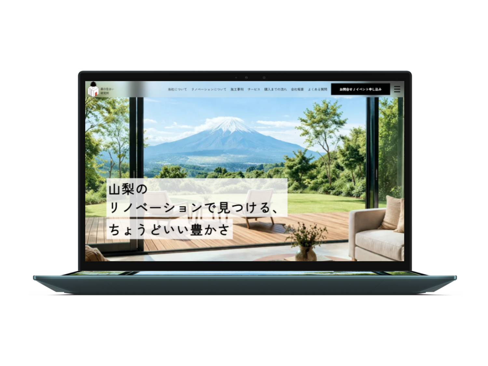
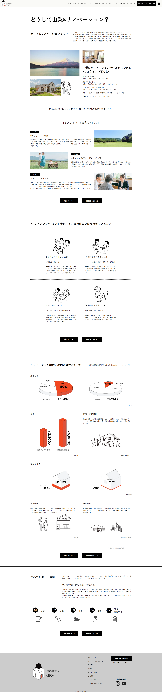

リノベーション不動産会社「森の住まい研究所」
制作時間
40時間 ／ 企画18時間・制作22時間
制作期間
2026年4月
制作体制
3名
ページ数
12ページ
担当ページ
リノベーションについて・施工事例・施工事例詳細・会社概要・お問い合わせ・よくある質問
課題とアプローチ
海外での人気が高まる一方、日本人にとっては敷居が高い、お年寄りの趣味という印象がある盆栽。
その心理的なハードルを下げて印象を変え、身近な存在として感じてもらうこと。
「生きた芸術である盆栽と、人間のDNAの共通点を体感し、盆栽を身近に捉えてもらう」
人の手によって受け継がれる盆栽のうねる幹から、DNAの螺旋を想起し、盆栽と人間の根幹にある共通点が突破口になると考えました。
生命力を表す「赤」と、風格・知性を表す「青」を配置し、淡いグラデーションにすることで、流動的な生命力と現代的な印象を与えました。
また、読むよりも感じさせるレイアウトを意識しました。専門用語の解説は用意しつつも熟読は求めず、大きく大胆な画像の配置で堅苦しさを排除し、直感的に視覚で楽しめる体験を設計しました。
生物図鑑のようなストーリー体験ができるような情報設計を心がけました。
トップページではなく、物語への入口となるスタートページを設置し、下層ページは徐々に盆栽を紐解いていくようなサイトマップを構築しました。
また、自分ごと化を促すコンテンツとして、「BONSAI DNA診断」を設置しました。ユーザーの思考やライフスタイルに基づく2択の質問を用意し、共通点が近い盆栽の形を提案することで、盆栽への親近感を生み出すインタラクティブな体験を設計しました。
